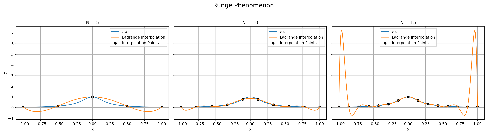

插值法
知道 \(x_i, f(x_i), \, i = 0, 1, \ldots, n\)，求指定形式函数 \(P(x)\)（多项式或三角函数），要求
\[ P(x_i) = f(x_i) = y_i, \quad i = 0, 1, \ldots, n. \]
多项式插值
定义：一个 \(n\) 次多项式：
\[ \varphi_n(x) = a_0 + a_1 x + a_2 x^2 + \cdots + a_n x^n, \]
s.t. \(\varphi_n(x_i) = y_i\)，\(a_0, a_1, \ldots, a_n\) 是待定系数。
\[ \left \{ \begin{aligned} \varphi_n(x_0) &= a_0 + a_1 x_0 + a_2 x_0^2 + \cdots + a_n x_0^n = y_0 \\ \varphi_n(x_1) &= a_0 + a_1 x_1 + a_2 x_1^2 + \cdots + a_n x_1^n = y_1 \\ \ldots \\ \varphi_n(x_n) &= a_0 + a_1 x_n + a_2 x_n^2 + \cdots + a_n x_n^n = y_n \end{aligned} \right. \]
即
\[ \underset{\text{Vandermonde 矩阵}}{\underbrace{\begin{bmatrix} 1 & x_0 & x_0^2 & \cdots & x_0^n \\ 1 & x_1 & x_1^2 & \cdots & x_1^n \\ \vdots & \vdots & \vdots & \ddots & \vdots \\ 1 & x_n & x_n^2 & \cdots & x_n^n \end{bmatrix}}} \begin{bmatrix} a_0 \\ a_1 \\ \vdots \\ a_n \end{bmatrix} = \begin{bmatrix} y_0 \\ y_1 \\ \vdots \\ y_n \end{bmatrix} \]
由 Cramer 法则理论上证明了 \(a_i\) 存在且唯一。而且 Vandermonde 矩阵条件数极大，在实际计算中不可用！
Lagrange 插值
求 \(\varphi_n(x)\)
求 \(n\) 次多项式，使得其过 \((x_0, \textcolor{red}{1}), (x_1, 0), \ldots, (x_n, 0)\)。
设
\[ l_0(x) = C(x - x_1)(x - x_2) \cdots (x - x_n) \]
代入 \((x_0, 1)\)，得 \(C = \frac{1}{(x_0 - x_1)(x_0 - x_2) \cdots (x_0 - x_n)}\)。
故
\[ l_0(x) = \frac{(x - x_1)(x - x_2) \cdots (x - x_n)}{(x_0 - x_1)(x_0 - x_2) \cdots (x_0 - x_n)} \]
类似地，可以得到，对于满足
\[ l_i(x_j) = \begin{cases} 1, & i = j \\ 0, & i \neq j \end{cases} \]
的 \(l_i(x)\)，可以求出其形式为
\[ \begin{equation} \tag{5-1} l_i(x) = \frac{(x - x_0)(x - x_1) \cdots (x - x_{i-1})(x - x_{i+1}) \cdots (x - x_n)}{(x_i - x_0)(x_i - x_1) \cdots (x_i - x_{i-1})(x_i - x_{i+1}) \cdots (x_i - x_n)} \end{equation} \]
分子分母都跳过 \(x_i\)。
把 \(l_i(x)\) 拼起来，
\[ \varphi_n(x) = y_0 l_0(x) + y_1 l_1(x) + \cdots + y_n l_n(x) \]
此即为 Lagrange 插值法。
事实上，\(\{l_i(x)\}\) 是多项式函数空间 \(\mathbb{P}^n(x)\) 的一组基，称为 Lagrange 插值多项式基函数。也就是说，
\[ \mathbb{P}^n(x) = \text{span}\{l_0(x), l_1(x), \ldots, l_n(x)\}. \]
童年美好的回忆
过 \((x_0, y_0), (x_1, y_1)\) 做一条直线。
用 Lagrange 插值法做？
\[ \varphi_1(x) = y_0 \frac{(x - x_1)}{(x_0 - x_1)} + y_1 \frac{(x - x_0)}{(x_1 - x_0)} \]
过 \((x_0, y_0), (x_1, y_1), (x_2, y_2)\) 做一条抛物线？
\[ \varphi_2(x) = y_0 \frac{(x - x_1)(x - x_2)}{(x_0 - x_1)(x_0 - x_2)} + y_1 \frac{(x - x_0)(x - x_2)}{(x_1 - x_0)(x_1 - x_2)} + y_2 \frac{(x - x_0)(x - x_1)}{(x_2 - x_0)(x_2 - x_1)} \]
可以看到，Lagrange 插值法给出了很漂亮的解析表达式（对不太大的 \(n\)，甚至能手写！），但计算性能不佳。
插值误差
当 \(x \in [a,b]\)，但 \(x \neq x_i\) 时，Lagrange 插值法的误差为
\[ R_n(x) = f(x) - \varphi_n(x) = \, ? \]
记 \(R_n(x) = K(x) \cdot \omega_{n+1}(x)\)，
\[ \omega_{n+1}(x) = \prod_{j=0}^n (x - x_j) = (x - x_0)(x - x_1) \cdots (x - x_n), \]
而 \(K(x)\) 和 \(f(x)\) 有关。
构造辅助函数：\(\forall x \neq x_i \in [a,b]\)，
\[ \psi(t) = f(t) - \varphi_n(t) - K(x) \cdot \omega_{n+1}(t), \]
则
\[ \psi(x_i) = \underset{=0}{\underline{f(x_i) - \varphi_n(x_i)}} - K(x) \cdot \underset{=0}{\underline{\omega_{n+1}(x_i)}} = 0. \]
故 \(\psi(t)\) 在 \([a,b]\) 上有 \(n+2\) 个零点 \(x, x_0, x_1, \ldots, x_n\)。
由 Rolle 定理，\(\psi'(t)\) 在 \([a,b]\) 上有 \(n+1\) 个零点。以此类推可知，\(\psi^{(n+1)}(t)\) 有一个零点，记为 \(\xi \in [a,b]\)。
\(\varphi_n(x)\) 是 \(n\) 次多项式，\(\omega_{n+1}(x)\) 是 \(n+1\) 次多项式，求 \(n+1\) 次导数后分别为 \(0\) 和 \((n+1)!\)，所以
\[ \psi^{(n+1)}(\xi) = f^{(n+1)}(\xi) - K(x) (n+1)! \]
得到
\[ \begin{aligned} K(x) &= \frac{f^{(n+1)}(\xi)}{(n+1)!}, \\ R_n(x) &= \frac{f^{(n+1)}(\xi)}{(n+1)!} \cdot \omega_{n+1}(x) \\ \end{aligned} \]
如果新增一个数据点...
Lagrange 插值法的基函数要全部重新计算！
\(\omega_{n+1}(x)\) 代表高频部分，应滤波后进行插值。
Newton 插值
差商
\[ \begin{aligned} \text{0 阶：} & f[x_i] = f(x_i), \quad i = 0, 1, \ldots, n. \\ \text{1 阶：} & f[x_i, x_j] = \frac{f(x_j) - f(x_i)}{x_j - x_i}, \quad i, j \in \{0, 1, \ldots, n\}, i \neq j. \\ \text{2 阶：} & f[x_i, x_j, x_k] = \frac{f[x_i, x_j] - f[x_j, x_k]}{x_i - x_k} \\ \vdots & \\ k\text{ 阶：} & f[x_0, x_1, \ldots, x_{k-1}, x_k] = \frac{f[x_0, x_1, \ldots, x_{k-1}] - f[x_1, x_2, \ldots, x_k]}{x_0 - x_k}. \end{aligned} \]
| $x_i$ | $f_i$ | $\,$ | $\,$ | | :---: | :---: | :---: | :---: | | $x_0$ | $f[x_0]$ | $\,$ | $\,$ | | $x_1$ | $f[x_1]$ | $f[x_0, x_1]$ | $\,$ | | $x_2$ | $f[x_2]$ | $f[x_1, x_2]$ | $f[x_0, x_1, x_2]$ | 基的角度
\[ 1, \quad x, \quad x^2, \quad \cdots, \quad x^n \]
\[ l_0(x), \quad l_1(x), \quad l_2(x), \quad \cdots, \quad l_n(x) \]
\[ 1, \quad x - x_0, \quad (x - x_0)(x - x_1), \quad \cdots, \quad (x - x_0)(x - x_1) \cdots (x - x_n) \]
设
\[ \varphi_n(x) = C_0 + C_1 (x - x_0) + C_2 (x - x_0)(x - x_1) + \cdots + C_n (x - x_0)(x - x_1) \cdots (x - x_n) \]
且过 \((x_0, y_0), (x_1, y_1), \ldots, (x_n, y_n)\)。
\[ \begin{aligned} \varphi_n(x_0) &= C_0 = f(x_0) \implies C_0 = f[x_0] \\ \varphi_n(x_1) &= C_0 + C_1 (x_1 - x_0) = f(x_1) \\ \implies C_1 &= \frac{f(x_1) - f[x_0]}{x_1 - x_0} = f[x_0, x_1] \\ \varphi_n(x_2) &= C_0 + C_1 (x_2 - x_0) + C_2 (x_2 - x_0)(x_2 - x_1) = f(x_2) \\ \implies C_2 &= \frac{f(x_2) - C_0 - C_1 (x_2 - x_0)}{(x_2 - x_0)(x_2 - x_1)} = \frac{f[x_0, x_1] - f[x_1, x_2]}{x_0 - x_2} = f[x_0, x_1, x_2] \end{aligned} \]
故 \(C_k\) 就是 \(f\) 的 \(k\) 阶差商。
Newton 插值法能更好地控制舍入误差。
插值误差
\[ R_n(x) = (x - x_0)(x - x_1) \cdots (x - x_n) f[x, x_0, x_1, \ldots, x_n] \]
看着只有一项，但不如 Lagrange 插值的余项好用。
差分
\[ \begin{array}{c} & x_0 & x_1 & x_2 & \ldots & x_n \\ & f(x_0) & f(x_1) & f(x_2) & \ldots & f(x_n) \end{array} \]
查表 + 多项式插值（零阶插值就是取最近的点，一阶插值就是取最近的两点，二阶插值就是取最近的三点，依次类推）：快速计算函数的方法。很重要的技术！
记 \(x_{i+1} - x_i = h\)，
\[ \frac{f(x_{i+1}) - f(x_i)}{x_{i+1} - x_i} = f[x_i, x_{i+1}] = \frac{\Delta f_i}{h} \]
\[ f[x_0, x_1, x_2] = \frac{f[x_0, x_1] - f[x_1, x_2]}{x_0 - x_2} = \frac{\Delta f_0 - \Delta f_1}{2h \cdot h} = \frac{\Delta^2 f_0}{2h^2} \]
Runge 现象
多项式是有刚性的
能否无限增加阶数 \(n\) 来减小余项 \(R_n\)？
例：\(f(x) = \sin x, \, x \in [0, \pi]\).
\[ R_n(x) = \frac{f^{(n+1)}(\xi)}{(n+1)!} \cdot \omega_{n+1}(x) \]
\(|f^{(n+1)}(\xi)| < 1\)，增加 \(n\) 确实能减小 \(R_n\). 对任何 \(f\) 都如此吗？
Runge 函数：
\[ f(x) = \frac{1}{1 + 25 x^2} \]

在一个点 \(f(x) \approx P_n(x)\)，在一个区间上有 \(f(x) \approx P_n(x)\) 吗？
Runge 现象说明，一定没有！
插值多项式不能一致逼近（某些）函数。
Hermite 插值
其它没有尖点的插值方式？
作多项式 \(P_m(x)\)，使得
\[ \left \{ \begin{array}{l} P_n(x_i) = f(x_i) \\[1ex] P_m'(x_i) = f'(x_i) \end{array} \right., \quad i = 0, 1, \ldots, n. \]
一共有 \(2n + 2\) 个条件，可以确定 \(m = 2n + 1\) 次多项式。
构造基函数满足：
\[ \left \{ \begin{array}{l} h_i(x_j) = \begin{cases} 0, & i \neq j \\ 1, & i = j \end{cases}, \quad i = 0, 1, \ldots, n \\[2em] h_i'(x_j) = 0, \quad j = 0, 1, \ldots, n \end{array} \right. \]
\[ \left \{ \begin{array}{l} H_i(x_j) = 0, \quad j = 0, 1, \ldots, n \\[2em] H_i'(x_j) = \begin{cases} 0, & i \neq j \\ 1, & i = j \end{cases}, \quad i = 0, 1, \ldots, n \end{array} \right. \]
得到
\[ P_{2n+1}(x) = \sum_{i=0}^n h_i(x) f(x_i) + \sum_{i=0}^n H_i(x) f'(x_i) \]
有点像 Lagrange 插值法。那牛顿会怎么做？
当 \(x_1 \to x_0, f[x_0, x_1] = \frac{f(x_1) - f(x_0)}{x_1 - x_0} \to f'(x_0)\)，所以
| $x_0$ | $f_0$ | $\,$ | $\,$ | | :---: | :---: | :---: | :---: | | $x_0$ | $f[x_0]$ | $f'(x_0) = f[x_0, x_0]$ | $\,$ | | $x_1$ | $f[x_1]$ | $f[x_0, x_1]$ | $f[x_0, x_0, x_1]$ | | $x_1$ | $f[x_1]$ | $f'(x_1) = f[x_1, x_1]$ | $f[x_0, x_0, x_1, x_1]$ | 写出
\[ H_3(x) = f(x_0) + f[x_0, x_0](x - x_0) + f[x_0, x_0, x_1](x - x_0)^2 + f[x_0, x_0, x_1, x_1](x - x_0)^2(x - x_1) = f(x_0) + f'(x_0)(x - x_0) + \frac{f'(x_0) - f[x_0, x_1]}{x_0 - x_1}(x - x_0)^2 \]
导数信息很麻烦...
实际生产中，数据点的导数信息很难获取/很不稳定！能否不借助导数信息给出光滑的插值？？
让左右两段的插值函数在节点处的导数相等 \(H^{(i)}(x_i) = H^{(i+1)}(x_i)\)，$i
分段三次 Hermite 插值
已知：
\[ \begin{array}{c} & x_0 & x_1 & x_2 & x_3 \\ & f'(x_0) & \, & \, & f'(x_3) \end{array} \]
要求：
$$
$$
三次样条插值
在 \([a,b]\) 上有 \(n+1\) 个节点 \(a = x_0 < x_1 < \cdots < x_n = b\)，已知 \(y = f(x)\) 在这些点上的取值 \(y_i = f(x_i), \, i = 0, 1, \ldots, n\)，求 \(S(x)\) 满足：
- \(S(x_i) = y_i, \quad i = 0, 1, \ldots, n\)
- \(S(x)|_{[x_j, x_{j+1}]}, \quad j = 0, 1, \ldots, n-1\) 是三次多项式
- \(S(x)\) 在 \([a,b]\) 上二次连续可微
\(S(x)\) 是分段三次多项式，称为三次样条插值函数。
在每个小区间：\([x_j, x_{j+1}]\)，\(S_j(x)\) 是三次多项式
\[ \left. \left \{ \begin{aligned} S_j(x_j) &= f(x_j) = y_j \\ S_j(x_{j+1}) &= f(x_{j+1}) = y_{j+1} \end{aligned} \right. \quad \right| \quad \small{\text{补充条件：}} \left\{ \begin{aligned} S_j''(x_j) &= M_j \\ S_j''(x_{j+1}) &= M_{j+1} \end{aligned} \right. \]
在 \([x_j, x_{j+1}]\) 上，对 \(S_j(x)\) 做关于 \(x_j\) 点的 Taylor 展开，有
\[ \begin{align} S_j(x) &= S_j(x_j) + S_j'(x_j)(x - x_j) + \frac{S_j''(x_j)}{2!}(x - x_j)^2 + \frac{S_j'''(x_j)}{3!}(x - x_j)^3 \tag{1.1}\\ S_j'(x) &= S_j'(x_j) + S_j''(x_j)(x - x_j) + \frac{S_j'''}{2!}(x - x_j)^2 \tag{1.2}\\ S_j''(x) &= S_j''(x_j) + S_j'''(x_j)(x - x_j) \tag{1.3} \end{align} \]
最后一个式子代入 \(x = x_{j+1}\)，得到 \(S_j''(x_{j+1}) = M_{j+1} = M_j + S_j'''(x_j)(x_{j+1} - x_j)\)，即
\[ S_j'''(x_j) = \frac{M_{j+1} - M_j}{x_{j+1} - x_j} := \frac{M_{j+1} - M_j}{h_j}, \quad h_j = x_{j+1} - x_j \]
代回第二式
\[ S_j'(x) = S_j'(x_j) + M_j(x - x_j) + \frac{M_{j+1} - M_j}{2h_j}(x - x_j)^2 \]
再代回第一式
\[ S_j(x) = y_j + S_j'(x_j)(x - x_j) + \frac{M_j}{2}(x - x_j)^2 + \frac{M_{j+1} - M_j}{6h_j}(x - x_j)^3 \]
代入 \(x = x_{j+1}\)，
\[ \begin{aligned} S_j(x_{j+1}) = y_{j+1} &= y_j + S_j'(x_j) h_j + \frac{M_j}{2}h_j^2 + \frac{M_{j+1} - M_j}{6}h_j^2 \\ &= y_j + S_j'(x_j) h_j + \left(\frac{M_{j+1}}{6} + \frac{M_j}{3}\right)h_j^2 \end{aligned} \]
写成差商的形式
\[ \frac{y_{j+1} - y_j}{h_j} = f[x_j, x_{j+1}] = S_j'(x_j) h_j + \left(\frac{M_{j+1}}{6} + \frac{M_j}{3}\right)h_j^2 \]
即
\[ \begin{equation} \tag{5-1} S_j'(x_j) = f[x_j, x_{j+1}] - \left(\frac{M_{j+1}}{6} + \frac{M_j}{3}\right)h_j^2 \end{equation} \]
同理，对于 \(S_{j-1}(x)\) 在 \(x_j\) 处的展开，只需将 \(h_j \mapsto -h_{j-1}\)，可以得到
\[ \begin{equation} S_{j-1}'(x_j) = f[x_{j-1}, x_j] + \left(\frac{M_{j}}{6} + \frac{M_{j-1}}{3}\right)h_{j-1}^2 \end{equation} \]
由导数的连续性条件，\(S_j'(x_j) = S_{j-1}'(x_j)\)，有
\[ \begin{equation} \frac{h_{j-1}}{6}M_{j-1} + \frac{h_j + h_{j-1}}{3}M_j + \frac{h_j}{6}M_{j+1} = f[x_j, x_{j+1}] - f[x_{j-1}, x_j] \end{equation} \]
此即书本 \((5.39)\) 式。
其中 \(j = 1, 2, \ldots, n-1\)，共 \(n-1\) 个方程。而未知数有 \(M_0, M_1, \ldots, M_{n-1}, M_n\)，共 \(n+1\) 个。缺的就是边界条件！
记
\[ \alpha_j = \frac{h_{j-1}}{h_{j-1} + h_j}, \quad \beta_j = 1 - \alpha_j = \frac{h_j}{h_{j-1} + h_j}, \quad c_j = \frac{6}{h_{j-1} + h_j} \left(f[x_j, x_{j+1}] - f[x_{j-1}, x_j]\right) \]
得到三弯矩方程！
\[ \begin{equation} \boxed{\alpha_j M_{j-1} + 2 M_j + \beta_j M_{j+1} = c_j}, \quad j = 1, 2, \ldots, n-1. \end{equation} \]
为了更形象地理解，来偷个懒 举个例子
绝对不是我抽象思维不行
例
\(j = 0,1,2,3,4\)
\[ \left \{ \begin{aligned} \alpha_1 M_0 + 2 M_1 + \beta_1 M_2 &= c_1 \\ \alpha_2 M_1 + 2 M_2 + \beta_2 M_3 &= c_2 \\ \alpha_3 M_2 + 2 M_3 + \beta_3 M_4 &= c_3 \end{aligned} \right. \]
-
给定 \(S''(a) = y_0'' = M_0, S''(b) = y_n'' = M_n\)，即样条端点处的二阶导，称为 \(D_2\) 样条。
-
若 \(S''(a) = S''(b) = 0\)，称为自然样条（端点不做力矩的约束）。
-
也可以给定 \(S'(a) = y_0', S'(b) = y_n'\)，即样条端点处的转角（一阶导）。端点处的 \eqref{5-1} 式变为
\[ \begin{aligned} S_1'(x_0) &= f[x_0, x_1] - \left(\frac{M_2}{6} + \frac{M_1}{3}\right)h_0^2 \\ S_{n-1}'(x_n) &= f[x_{n-1}, x_n] + \left(\frac{M_n}{6} + \frac{M_{n-1}}{3}\right)h_{n-1}^2 \end{aligned} \]
CubicSpline(x,y, bc_type='clamped')，bc_type='natural'，bc_type='not-a-knot'
- 周期边界条件：\(S'(a + 0) = S'(b - 0), S''(a + 0) = S''(b - 0)\)。此时 \(S(x)\) 是周期函数，\(S(a + 0) = S(b - 0)\)。
移项成稍微好看点的形式：
\[ \left \{ \begin{aligned} 2 M_1 + \beta_1 M_2 &= c_1 - \alpha_1 M_0 \\ \alpha_2 M_1 + 2 M_2 + \beta_2 M_3 &= c_2 \\ \alpha_3 M_2 + 2 M_3 &= c_3 - \beta_3 M_4 \end{aligned} \right. \]
边界条件丢了咋办？
非节点条件
靠近边界的三个点用来拟合出一条抛物线！强行凑出了导数信息
缺点是连续性会变差
高维插值会比较麻烦，插值点的位置有要求（插值曲面存在性都是个问题）！
逼近法 / 有限元
电脑上的汉字字体是用样条函数绘制的！
{kind=link}
{kind=link}
{kind=link}